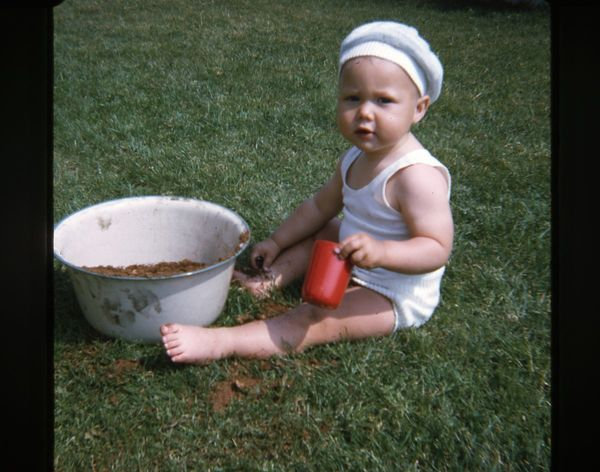

My report page in the course XXX

This is my report-page in the course. This page contains a presentation of myself. Keep this site updated all through the course and hand it in, for grading, in the end of the course.
So, a presentation might be in order. I'll begin.
My name is Mikael Roos, born and raised in Bankeryd, Småland, just outside of Jönköping at the edge of the lake Vättern, in a detached home area just being built. I liked to play landhockey, I played bandy and hockey and attained the Bowling gymnasium in Nässjö. I've been working as a cleaner, disher, Jag har varit städare, diskare, waither and as chef, in my youth that is. Like on a banana peel I landed in Ronneby, Blekinge in 1990, began school, found a job and family and so on.
Programming has always been an interest of mine, ever since I was 13 years old and got my first computer, a Spectravideo 328 with tape recorde.
If I should mention a hobby, besides web programming, then it would be to remove and carry stones on my sommer cottage. There is a lot of stone there.
On and off I try new hobbies, one year it was online poker, another year it was Geocaching and the Turfing. Currently I am available to start up new hobbies so lets se what might turn up.
Lets keep in touch in the chatt and through GitHub!